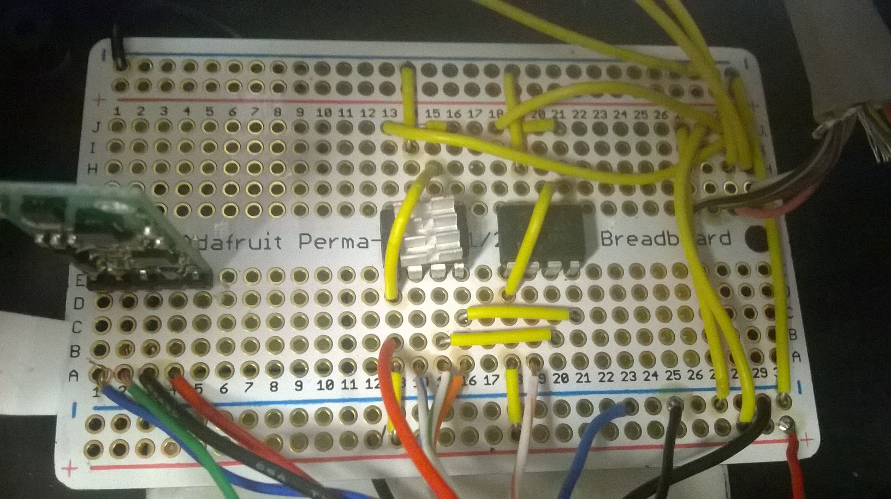
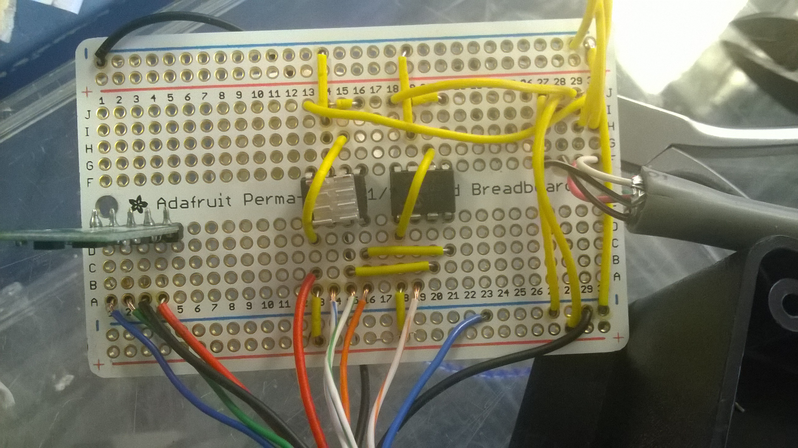
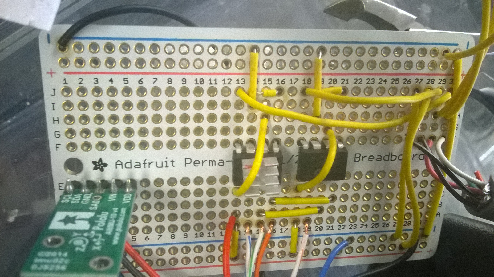
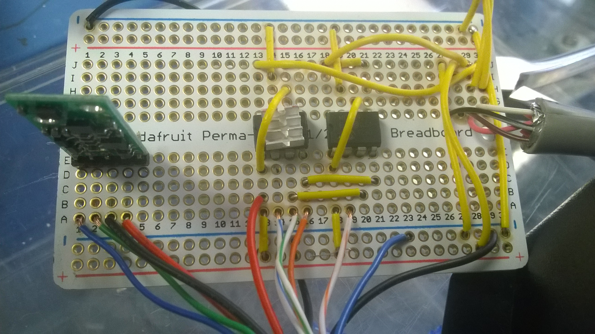
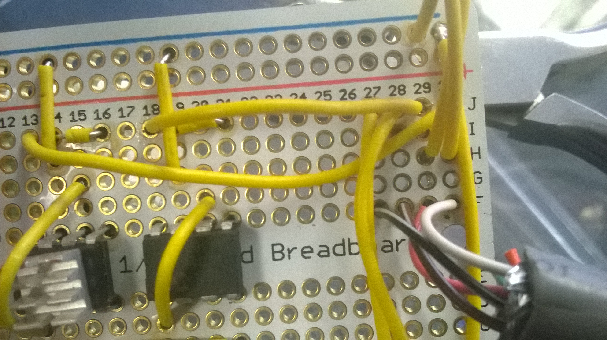
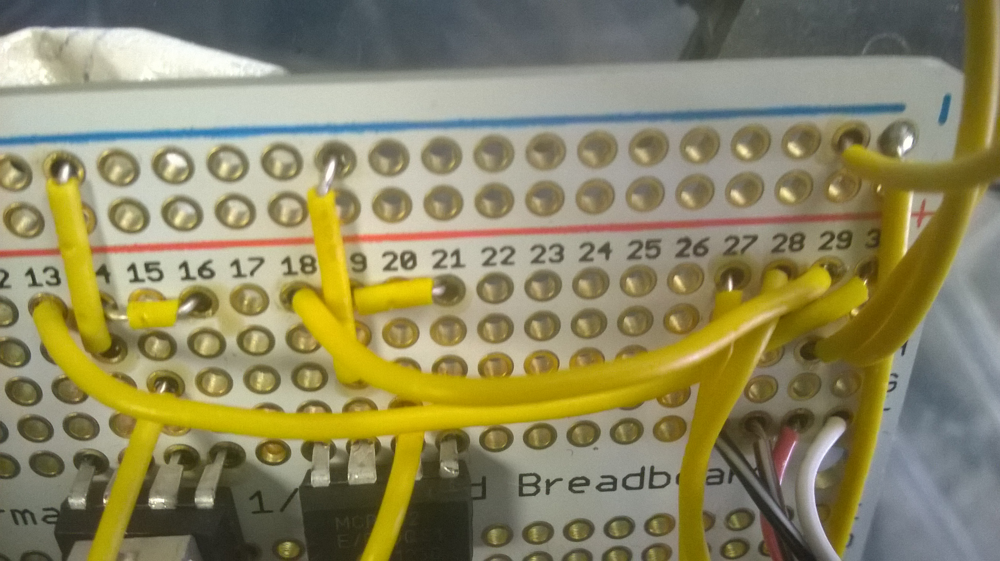

BalanceBot
Table of Contents
1 PID Tuning:
Start with P, I, D = 0 Then turn up P until you see oscillation Then turn up D until the oscillation disappears; adjust it until it becomes critically damped (no overshoot) Then turn up I until it reaches and stabilizes at the set point in a reasonable amount of time
The proportional term reacts proportionally to the system's current error. It is the driving force of the PID. The derivative term serves to dampen the proportional so that it doesn't oscillate about the set point. The integral term serves to increase responsiveness and decrease stabilization time.
I typically like to do this by opening an excel spreadsheet and running the balancebot with the serial monitor open. After each run, I copy the data output from the serial monitor into excel and graph what it looks like. I then use those graphs to analyze how each tuning setting is working.
The PID values can be adjusted within Head.h, on line 30. Additionally, the tunings can be updated dynamically via the serial monitor after having performed its first bias initialization. The logic behind this is that the values that you want to use for the first run should be those in the code.
2 Wiring
2.1 General
2.1.1 Software control ON/OFF switch
- Controls arduino program
| Wire | Connects to | Purpose |
|---|---|---|
| Red | Arduino pin 7 | Power/input |
| Black | Breadboard ground rail 1 | GND |
| White | N/A | N/A |
2.1.2 Joint Arduino/RobotEQ power supply
Power supply shared between Arduino and RobotEQ. The leads from the supply are split into two going to each controller:
- RobotEQ Controller Power
- Powers the RobotEQ controller independently from the motor power supply
- The controller can be powered by the motor power supply and this lead left floating, but a seperate 12-40v supply is recommended to provide the controller with a distinct logic high reference point
Wire Connects to Purpose Yellow RobotEQ Power Black RobotEQ GND - Powers the RobotEQ controller independently from the motor power supply
- Arduino Power
- Arduino runs on a 9-20v DC supply (recommended 9-12v) - higher voltages highly inefficient
- Requires a center-positive 9mm barrel jack
2.1.3 Motor Power 1 (into RobotEQ)
- Two 12v 12ah batteries connected in series through red Anderson Power connectors
- Raw power for motors
- Runs through E-Stop and ON/OFF switch on bottom before going into RobotEQ controller
- Needs 24v DC (max, can operate 12-24v)
| Wire | Connects to | Purpose |
|---|---|---|
| Brown | Through red connector then SPLITS into two thick red wires going into RobotEQ | Power |
| Black | Through red connector, E-stop, on/off (bottom) then SPLITS into two thick black wires going into RobotEQ | GND |
2.1.4 E-stop
- Controls connection of ground wire for motor power (see Motor Power 1)
| Wire | Connects to | Purpose |
|---|---|---|
| Blue (x2) | The red base of the E-stop | Cuts motor power |
2.1.5 Motor Power 2 (from RobotEQ)
- Regulated power for motors (controlled by RobotEQ, drawn from Motor Power 1)
- 4 wires total, 2 per motor
| Wire | Connects to | Purpose |
|---|---|---|
| White | Motor's red lead | Motor power |
| Green | Motor's black lead | Motor GND |
2.1.6 Status LED
- Shows status of segway
- Lit when segway is ready to go on the software end (not off or calibrating)
- DOES NOT indicate motor readiness status
| Wire | Connects to | Purpose |
|---|---|---|
| White | Arduino pin 2 | Power/control |
| Blue | Breadboard ground rail 2 | GND |
2.1.7 Steering potentiometer
- 10k Poteniometer mounted and attached to the bold securing the handle bar to the frame
- Bolt rotates with handle bar, rotating pot
| Wire | Connects to | Purpose |
|---|---|---|
| Red | BB power rail 2 | Power |
| Black | BB GND rail 2 | GND |
| Green | ARD pin A0 | Wiper/variable voltage signal |
2.1.8 Arduino-RobotEQ Analog Comm
- Communication channel between Arduino and RobotEQ
- Arduino sends 2x analog voltage dictating motor speed & direction
- Wires from breadboard connected to serial connector on RobotEQ
- Serial wire cut open and only 4 wires used:
| Breadboard location | Connects to (serial cable to RobotEQ) | Purpose |
|---|---|---|
| Row 30 col F | White | Analog 1 |
| Row 30 col F | Pink | Analog 2 |
| Row 30 col F | Brown w/ white stripe | +5v (from Arduino) |
| Row 30 col F | Black w/ white stripe | GND |
2.2 Arduino / Breadboard
Power/GND rail pairs run lengthwise on each side of the board: Rail 1 is next to col J Rail 2 is next to col A
"BB" indicates breadboard location "ARD" indicates arduino location/pin
If connecting wire color is omitted it is assumed to be yellow.
2.2.1 General
| Lead | Connects to… | Lead |
|---|---|---|
| BB GND rail 1 | BB GND rail 2 | |
| BB GND rail 2 | black wire | ARD GND |
2.2.2 IMU
Plugged in with Polulu logo facing center of BB in col E, rows 1-5
| Lead | Connects to… | Lead |
|---|---|---|
| IMU SCL (BB row 1) | blue wire | ARD A5 |
| IMU SDA (BB row 2) | green wire | ARD A4 |
| IMU GND (BB row 3) | black wire | ARD GND |
| IMU VIN | red wire | ARD +3.3v |
2.2.3 DAC Output Probe
| Lead | Connects to… | Lead |
|---|---|---|
| DAC1 output (BB row 30) | Multimeter + | |
| DAC2 output (BB row 29) | Multimeter + | |
| BB GND rail 1 | Multimeter - |
2.2.4 DAC
DAC chips arranged as follows over the BB center divider, divets facing row 1, with pin numbering: ('u' indicates the divet location)
1 -|==u==|- 8 2 -| |- 7 3 -| |- 6 4 -|=====|- 5
Chip 1 (DAC1): Pins 1, 8 on row 13
Chip 2 (DAC2): Pins 1, 8 on row 18
Columns A-E constitute the "left" side of the breadboard, columns F-J constitute the "right" side of the breadboard
| Lead | Connects to… | Lead |
|---|---|---|
| RobotEQ comm cable white (BB row 30) | DAC1 pin 8 (BB row 13) | |
| RobotEQ comm cable pink (BB row 29) | DAC2 pin 8 (BB row 18) | |
| RobotEQ comm cable brown w/ stripe (BB row 28) | BB power rail 2 | |
| RobotEQ comm cable black w/ stripe (BB row 27) | BB GND rail 2 |
| Lead | Connects to… | Lead |
|---|---|---|
| DAC1 pin 1 (BB row 13 left) | DAC1 pin 6 (BB row 15 right) | |
| red wire | ARD +5v | |
| BB power rail 2 | ||
| DAC1 pin 2 (BB row 14 left) | blue stripe wire | ARD pin 10 |
| DAC1 pin 3 (BB row 15 left) | DAC2 pin 3 (BB row 20 left) | |
| green stripe wire | ARD pin 13 | |
| DAC1 pin 4 (BB row 16 left) | DAC2 pin 4 (BB row 21 left) | |
| orange wire | ARD pin 11 | |
| DAC1 pin 5 (BB row 16 right) | DAC1 pin 7 (BB row 14 right) | |
| DAC1 pin 7 (BB row 14 right) | BB GND rail 1 | |
| DAC2 pin 1 (BB row 18 left) | BB power rail 2 | |
| DAC2 pin 6 (BB row 20 right) | ||
| DAC2 pin 2 (BB row 19 left) | orange stripe wire | ARD pin 8 |
| DAC2 pin 5 (BB row 21 right) | DAC2 pin 7 (BB row 19 right) | |
| DAC2 pin 7 (BB row 19 right) | BB GND rail 1 |
2.2.5 Images
The final state of the breadboard is as shown: 
The slightly older images below provide better views of the breadboard layout due to better lighting. Additionally, the configuration is only slightly modified in the final image above, and the additions that have been made are easily visible there.     
3 DAC SPI Notes
- Supports Mode 0,0 & Mode 1,1 Clock polar: 0 1 Clock phase: 0 1
- Rated @ 20 MHz
- Samples on rising edge
- Data sent when CS pin held low
- 16 bits
- Most Sig. 4 bits are config bits
- bring LDAC pin to low to write the commands and update VOUT
:::::::::::::from datasheet:For the MCP4921, 8-PDIP:::::::::::::: Pin Name Function 1 Vdd Power supply (max 6.5v) 2 CS chip select, held low for the duration of a write command 3 SCK clock signal from arduino when data is being sent 4 SDI data sent 5 LDAC Latch DAC syncronization input. Can be tied low if transfer on the rising edge of CS is desired. Otherwise output happens on rising edge of the CS pin (16 bit send complete) 6 Vrefa The input signal can range from AVss to Vdd 7 AVss Power ground 8 Vouta Analog voltage output signal (DAC)
bit 15 A/B: DACA or DACB Select bit 1 = Write to DACB 0 = Write to DACA –Use this one since there is no DACB signal
bit 14 BUF: VREF Input Buffer Control bit 1 = Buffered 0 = Unbuffered –Use this one to output DAC without extra delay time
bit 13 GA: Output Gain Select bit 1 = 1x (VOUT = VREF * D/4096 –Use this one for one to one output 0 = 2x (VOUT = 2 * VREF * D/4096) –This will put a gain of 2 on the output programmed –but the max will still be the reference voltage bit 12 SHDN: Output Power Down Control bit 1 = Output Power Down Control bit – Use this one to turn on the output DAC voltage 0 = Output buffer disabled, Output is high impedance –this one will turn it off
bit 11-0 D11:D0: DAC Data bits 12 bit number “D” which sets the output value. Contains a value between 0 and 4095
::::::::::from Arduino Refernce page for SPI::::::::::::::::::::::::::::::::: Every SPI device has a maximum allowed speed for SPI Bus. The SPI.setClockDivider() allows you to change the clock speed to make your device working properly (default is 4MHz). These pins support SPI communication using the SPI library (DUO): SPI: 10 (SS), 11 (MOSI), 12 (MISO), 13 (SCK).
::::::::::How to hook up the MCP4921 to the Arduino UNO::::::::::::::::::::::::::::::::::::: MCP4921, 8-PDIP Pin Name —> Connection 1 Vdd —> 5 volt power supply - can come from Arduino 2 CS —> Arduino pin 10 3 SCK —> Arduino pin 13 4 SDI —> Arduino pin 11 5 LDAC —> Ground 6 Vrefa —> 5 volt power supply - for reference use only 7 AVss —> Ground 8 Vouta —> Analog voltage output signal (DAC)
- See Page 24
- See: https://www.arduino.cc/en/reference/SPI
*******************- DAC IS WORKING ************************** See: ADC2DAC.ino